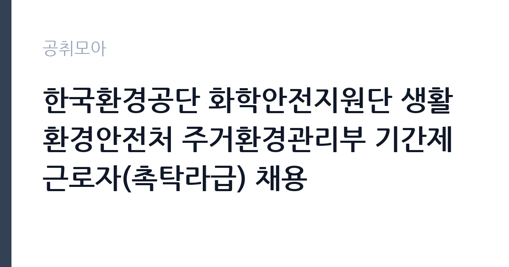

[공공기관] 한국환경공단 화학안전지원단 생활환경안전처 주거환경관리부 기간제근로자(촉탁라급) 채용
한국환경공단 · 인천 · 마감 2026-10-06 (D-15) · 출처 잡알리오

한눈에 보는 모집 조건
| 기관 | 한국환경공단 |
|---|---|
| 공고명 | 한국환경공단 화학안전지원단 생활환경안전처 주거환경관리부 기간제근로자(촉탁라급) 채용 |
| 고용형태 | 기간제 |
| 근무지 | 인천 |
| 게시일 | 2026-09-22 |
| 마감일 | 2026-10-06 (D-15) |
지원자격, 이렇게 읽으세요
- 공공기관 채용공시
- 세부 조건은 원문 공고문 확인
지원자격은 자격·경력·학력 중 하나만 충족하면 되는 구조다. 해당 분야 기사 자격이 있으면 경력 없이도 가능하고, 산업기사는 2년 경력, 고졸은 3년 경력이 필요하다. 함정은 응시 불가 조건에 있다. 공무원 임용 대기자는 안 되고, 취업이 결정된 사람도 안 되며, 대학원 포함 재학생과 휴학생은 응시 자체가 불가하다. 10월부터 전일 근무가 가능한 상태인지가 사실상 필수 조건이므로, 학생 신분이라면 지원 전에 정리해야 한다.
이 공고의 포인트
배치 부서가 화학안전지원단이라는 점이 이 공고의 개성이다. 생활화학제품과 주거환경 유해물질 관리는 환경공단이최근 들어 힘을 싣는 분야로, 가습기살균제 사태 이후 생활환경 안전 조직이 커졌다. 환경·화학·보건 계열 전공자에게는 전공을 살린 실무 경력을 쌓을 수 있는 자리이며, 공단 내부 사정을 익히면 이후 공단 채용의 밑거름이 된다.
전형은 어떻게 진행되나
전형은 서류전형과 면접전형으로 진행되는 것이 일반적이다. 서류에서는 응시요건 해당 여부와 환경 분야 경력을 검증하고, 면접에서는 직무 이해도와 현장 대응 역량을 평가한다. 제출 서류는 응시원서와 자기소개서, 자격증 사본과 경력증명서가 기본이며, 세부 목록과 접수 방법은 원문 공고문에서 확인해야 한다.
원문에서 확인한 전형 방식
ㅇ 공통사항 - 한국환경공단 인사규정 제16조의 결격사유가 없는자 - 한국환경공단 인사규정 제59조에 따른 영리업무 겸직근무자 제외 - 퇴직 공직자의 경우, 공직자윤리법 제17조에 따라 채용일 이전까지 관할 공직자 윤리위원회의 취업 승인을 받은 자 - 한국환경공단 채용분야 자격기준에 해당하는 자 - 임용얘정일(2026년 10월 예정)부터 근무 가능한 자 ※ 공무원 임용대기, 기업 등 취업이 결정된 자, 대학(원) 재·휴학생 응시불가 ㅇ 공단 채용자격 기준에 부합한자 다음 각 호 중 어느 하나 이상에 해당하는 자 - 해당분야의 기사자격증 소지자 또는 산업기사 자격을 취득한 후 2년 이상 해당분야의 경력이 있는 자 - 고등학교 졸업(동등의 자격이 있다고 국가가 인정하는 경우를 포함한다)후 3년 이상 해당분야 경력이 있는 자 - 해당분야의 학사학위 소지자(졸업예정자 포함) 또는 전문학사 졸업 후 2년 이상 해당분야 경력이 있는 자 ※ 세부내용은 채용공고문을 참조
이런 분께 추천해요
- 환경·화학·위생 분야 기사 자격증을 보유한 사람
- 환경 측정·분석이나 화학물질 관리 실무 경력이 있는 사람
- 10월부터 인천에서 전일 근무가 가능하고 공단 경력을 쌓으려는 사람
지원 전 체크리스트
- 기사·산업기사·학력·경력 중 본인 해당 트랙을 확정하고 증빙을 준비한다
- 재학생·휴학생·임용대기·취업결정자 해당 여부를 점검한다
- 2026년 10월 임용 예정일부터 근무 가능한 상태인지 확인한다
- 접수 마감일(10월 6일)과 접수 방법을 원문 공고문에서 확인한다
모집 일정과 제출 타이밍
접수는 2026년 10월 6일에 마감되고, 임용 예정일은 2026년 10월이다. 서류와 면접을 10월 초에 압축해 진행하는 일정이 예상되므로, 지원 서류를 미리 준비해야 한다. 계약 기간과 연장 가능성은 공고마다 다르므로 원문 공고문의 근무조건 항목에서 확인해야 한다.
직무 이해하기: 공공기관
주거환경관리부의 실무는 생활공간 속 유해물질 관리다. 실내공기질과 석면, 라돈 같은 주거환경 유해인자의 조사·측정 지원, 생활화학제품 안전 관련 행정 지원, 민원 응대와 자료 정리가 주요 업무다. 화학안전지원단 소속이므로 화학물질 통계와 사업장 점검 지원 업무가 곁들여질 수 있다. 법령과 고시에 근거한 행정 실무라 문서 작성 능력과 꼼꼼함이 요구된다.
자기소개서 작성 팁
자기소개서는 자격 취득 과정과 실무 경험을 연결해야 한다. 기사 자격을 어떻게 공부했고, 그 지식을 현장에서 어떻게 썼는지를 구체적으로 쓰는 것이 좋다. 환경공단의 화학안전·주거환경 사업 중 하나를 언급하며 왜 이 부서인지 설명하면 진정성이 전달된다. 기간제라도 맡은 기간에 성과를 내겠다는 태도를 분명히 해야 한다.
면접 준비 포인트
면접에서는 화학물질 안전 상식을 묻는다. 생활화학제품 표시 사항, 실내공기질 오염물질의 종류, 석면 해체 현장의 안전 조치 같은 기본 질문이 예상된다. 현장 대응 상황 질문(민원 발생 시 조치 순서)도 단골이다. 전공서적을 외우기보다 공단의 실제 사업(알리오·공단 홈페이지의 사업 소개)을 파악하고 가는 것이 실전에 가깝다.
급여·근무조건 읽는 법
정확한 보수액은 원문 공고문의 보수 항목에서 확인해야 한다. 한국환경공단 촉탁직 보수는 공단 내부규정에 따르며 4대보험에 가입되는 구조가 일반적이다. 과거 유사 공고에서 촉탁라급 보수가 월 170만 원대로 제시된 사례가 있으나 시점이 오래되어 현재와 다를 수 있으므로, 이번 공고의 확정액은 원문에서 확인하기 바란다. 경쟁률과 합격선은 공개되지 않으므로 원문에서 확인해야 한다.
자주 묻는 질문
- 촉탁직의 계약 기간은 어떻게 되나요?
기간제근로자로 계약 기간이 정해져 있으며, 사업 일정에 따라 정해진다. 정확한 기간과 연장 가능성은 원문 공고문의 근무조건 항목에서 확인해야 한다. - 재학생은 정말 지원이 안 되나요?
공고문에 대학원 포함 재학생·휴학생 응시 불가라고 명시되어 있다. 10월 임용일부터 전일 근무가 전제이기 때문이며, 예외는 인정되지 않는 것이 일반적이다. - 근무지는 인천인가요?
지원단·처 소속으로 인천 근무가 예정되어 있다. 세부 근무지와 부서 배치는 원문 공고문에서 확인해야 한다.
함께 보면 좋은 공고
[공공기관] 한국토지주택공사 개방형 직위(감사실장, 준법감시관) 공모 — 마감 2026-10-07[공공기관] 한국도로공사 비상임이사 공모 — 마감 2026-09-29[공공기관] 2026년 하반기 2차 중소벤처기업진흥공단 체험형 청년인턴(장애인) 채용 공고 — 마감 2026-10-12출처: 잡알리오 공개정보를 바탕으로 공취모아가 정리한 안내글입니다. 모집 조건·일정은 변경될 수 있으니 지원 전 반드시 원문 공고문을 확인하세요. 본 글은 정보 제공용이며 합격을 보장하지 않습니다.